언론보도
- 기고
금융 수사 환경이 바뀔 때 투자자가 먼저 챙겨야 할 거래 기록
거래 명세와 대화 기록은 수사 초기에 사실관계를 설명하는 가장 확실한 자료입니다. 서헌 금융범죄 전담센터가 수사 단계별로 준비할 기록을 정리했습니다.
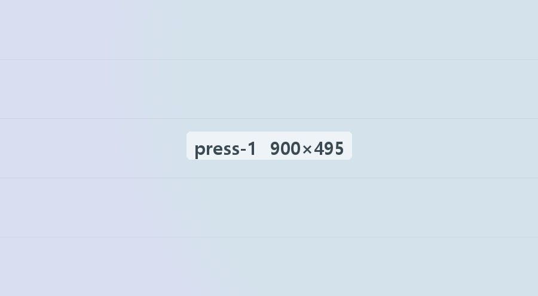
- 방송시사 프로그램 인터뷰
잔금을 받기도 전에 등기부터? 매도인이 조심할 소유권 이전 요구
최근 매매 현장에서 잔금 지급 전에 등기를 먼저 넘겨 달라는 요구가 늘고 있습니다. 계약서에 넣어야 할 조건과 분쟁이 생겼을 때의 대응 순서를 설명했습니다.
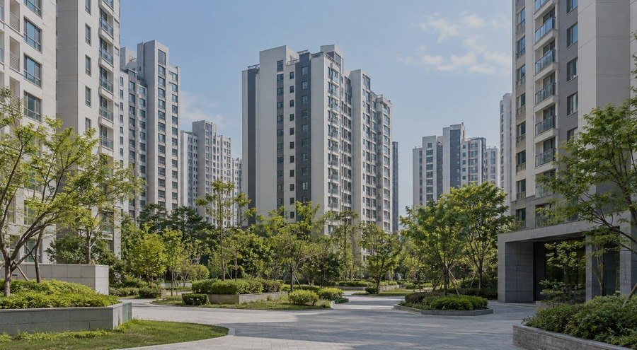
- 방송아침 정보 프로그램 인터뷰
입주 한 달 만에 천장에서 물이, 누수 책임은 누구에게 있나
새 아파트에 입주한 지 한 달 만에 욕실 천장에서 물이 떨어졌다는 사연을 다뤘습니다. 윗집 배관 문제인지 공용 배관 문제인지에 따라 책임지는 쪽이 달라지므로, 원인을 가리기 전에 사진과 관리사무소 접수 기록부터 남겨 두어야 한다고 설명했습니다.
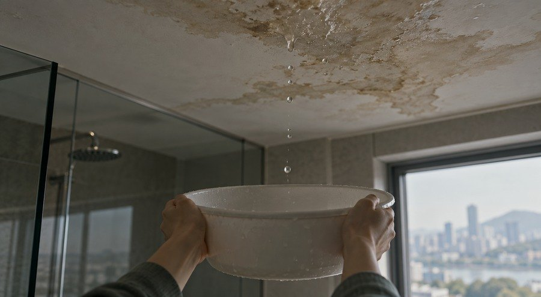
- 방송시사 교양 코너 인터뷰
사전점검 뒤에도 남은 하자
입주 전 사전점검에서 지적한 하자가 보수되지 않은 채 입주가 시작된 아파트를 찾았습니다. 분양받은 집에 시공상 하자가 있다면 시행사에 보수나 손해배상을 청구할 수 있고, 사정에 따라서는 시공사에 직접 책임을 물을 수도 있다고 설명했습니다.
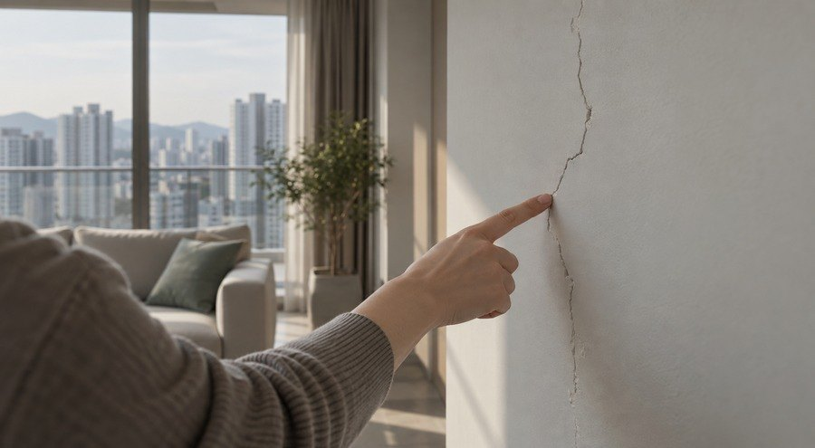
- 방송탐사 보도 프로그램 인터뷰
공사대금 받고 사라진 인테리어 업체, 남은 공사는 어떻게
계약금과 중도금을 받은 인테리어 업체가 공사를 절반만 하고 연락을 끊은 사례를 다뤘습니다. 계약서와 이체 내역, 공정 사진을 모아 계약 해제와 손해배상을 함께 청구할 수 있고, 사기 혐의로 고소할 수 있는지도 따져 봐야 한다고 설명했습니다.
- 방송아침 정보 프로그램 인터뷰
지역주택조합 가입 5년째, 분담금은 늘어도 착공은 아직 기약 없어
가입한 지 5년이 지나도록 착공하지 못한 지역주택조합의 조합원들을 만났습니다. 탈퇴와 분담금 반환은 가입 계약서와 조합 규약에 따라 가능 여부가 달라지므로, 총회 의사록과 사업 진행 자료를 먼저 확인해야 한다고 짚었습니다.
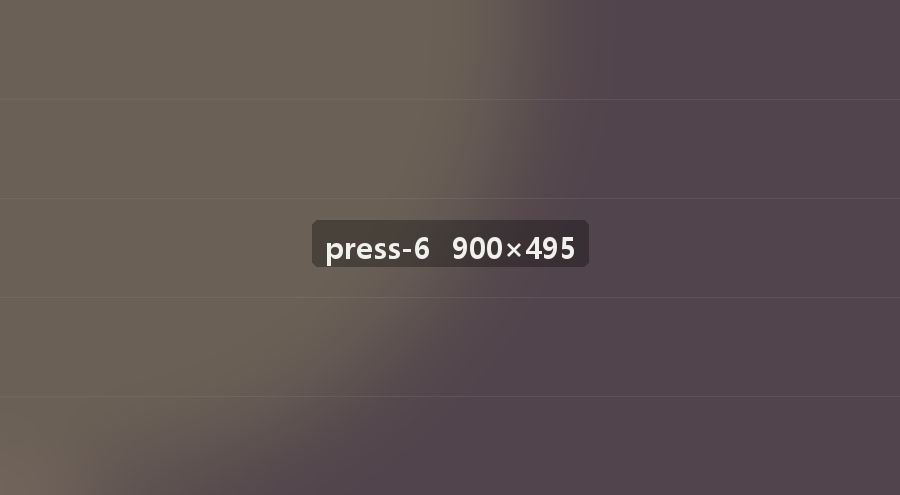
- 방송생활 법률 코너 인터뷰
옵션 계약을 거절하자 벌어진 일들
분양 계약 뒤 발코니 확장과 가전 옵션을 거절하자 불이익을 받았다는 수분양자들의 이야기를 다뤘습니다. 옵션 계약은 본계약과 따로 맺는 계약이어서 강요할 수 없고, 거절 뒤 받은 안내 문자와 통화 기록을 보관해 두라고 설명했습니다.
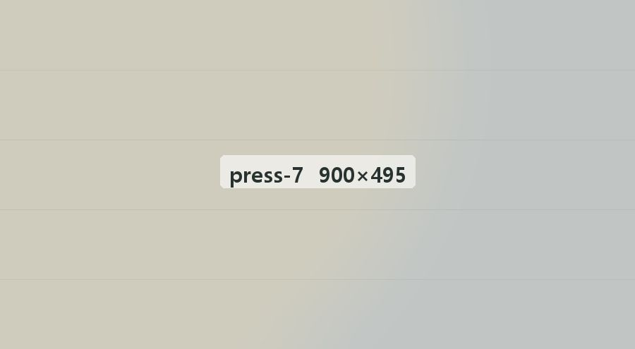
- 기고
가상자산 거래 기록을 수사 초기에 먼저 정리해야 하는 이유
가상자산 사건은 거래소와 지갑을 여러 번 옮겨 다닌 기록이 쌓여 있어 수사기관이 자금 흐름을 오해하기 쉽습니다. 입출금 내역과 지갑 주소, 대화 기록을 날짜순으로 정리해 두면 초기 조사에서 사실관계를 바로 설명할 수 있습니다.
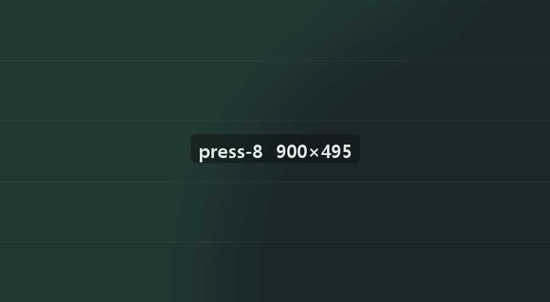
- 방송경제 채널 법률 코너
리딩방 투자 손실을 돌려받으려면
유료 리딩방에서 추천받은 종목으로 손실을 본 투자자들의 문의가 이어지고 있습니다. 운영자가 허위 정보로 투자를 권유했거나 수익을 약속했다면 손해배상을 청구할 수 있어, 입금 내역과 대화방 기록을 모두 보관해 두라고 설명했습니다.
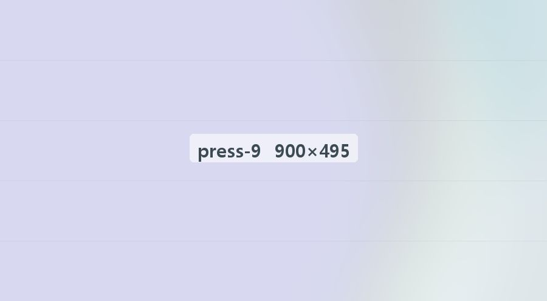
- 방송경제 뉴스 인터뷰
공매도 규정 위반, 개인 투자자도 처벌받을까
공매도 규정 위반은 기관만의 문제가 아니라 개인 투자자에게도 과징금이 부과될 수 있습니다. 차입 여부를 확인하지 않고 매도 주문을 낸 경우가 문제 되므로, 주문 경위와 증권사 안내 내용을 함께 살펴봐야 한다고 짚었습니다.
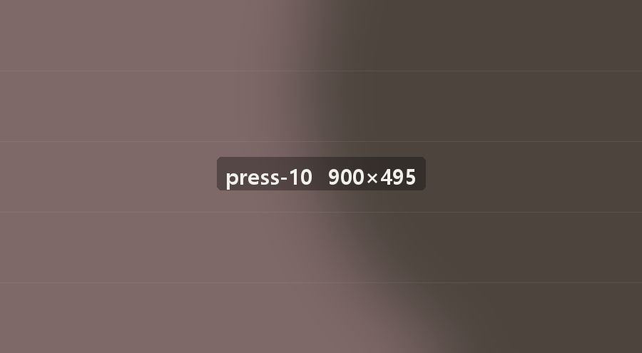
- 방송경제 채널 법률 코너
불공정거래 조사, 금융당국 출석 전에 꼭 알아 둘 것
금융당국 조사에서 작성된 문답서는 이후 형사 절차에서도 증거로 쓰일 수 있습니다. 출석 전에 거래 시점별 판단 근거를 정리하고, 변호인과 함께 진술 방향을 정해 두어야 불필요한 오해를 줄일 수 있다고 설명했습니다.
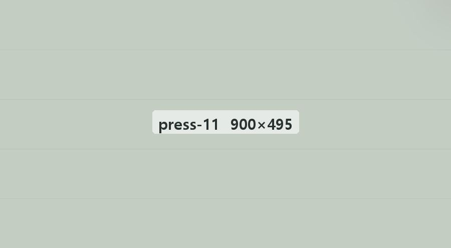
- 방송시사 교양 코너 인터뷰
새로 지은 빌라 벽지에 핀 곰팡이
입주 첫 겨울에 벽지와 붙박이장 안쪽까지 곰팡이가 번진 신축 빌라를 찾았습니다. 결로가 단열 시공 문제인지 생활 습관 문제인지에 따라 책임이 갈리므로, 온습도 기록과 시공 도면을 함께 확인해야 한다고 조언했습니다.
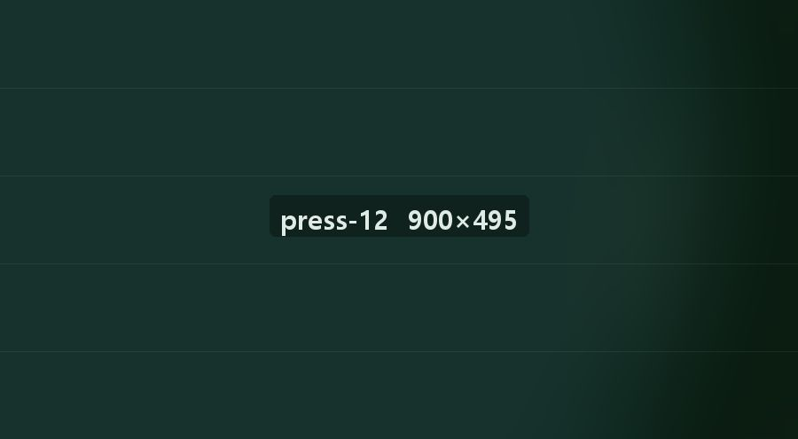